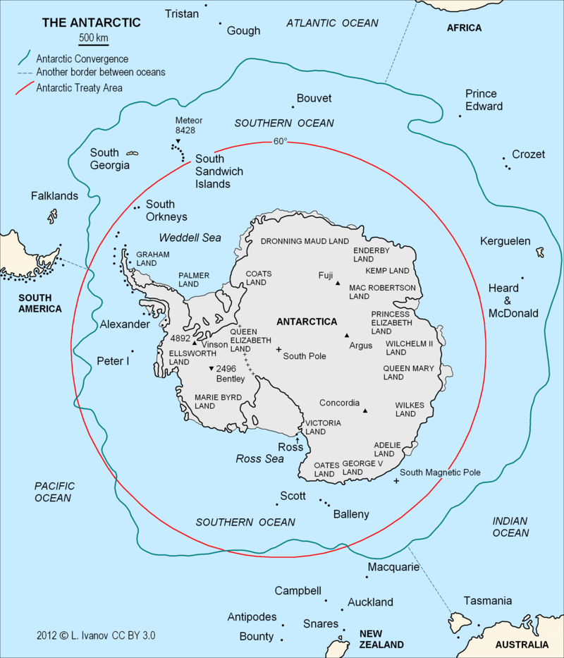

GEOGRAPHY
- ▶ The Antarctic is a polar region of the South Pole, opposite of the Arctic region of the North.
- ▶ Most of the Antarctic region is governed with the accordance of the Antarctic Treaty System. The treaty covers the continent, as well as the nearby islands such as the South Orkney Islands, South Shetland Islands, Peter I Island, Scott Island, and Balleny Islands.